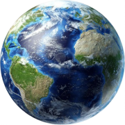
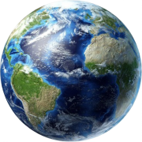

Earth is the third planet from the Sun and the only planet in the Universe known to contain life. It is the densest planet in the Solar System and the largest of the four terrestrial planets. Home to humans, us where we have built many civilisations around the world.
Currently no one knows how Earth got its name, but is derived from both English and German words, 'eor(th)e/ertha' and 'erde', respectively, which mean ground. Earth is also the only planet in our solar system to not be named after a Greek or Roman god or goddess.
Earth is 70% covered with water the remaining 30% is made up of the seven continental landmasses. Underneath the water that fills the oceans, and the dirt and plants that cover the continents, the Earth’s surface layer is made of rock. This outer layer formed a hard, rocky crust as lava cooled about 4.5 billion years ago. This crust is broken into many large plates(tectonic plates) that move slowly relative to each other. The mountain ranges around the world formed when two plates collided and their edges are forced up. Many other surface features are the result of the movement of these tectonic plates. The plates move anywhere from 25 to 100 mm per year. About 250 million years ago most of the land was connected together.